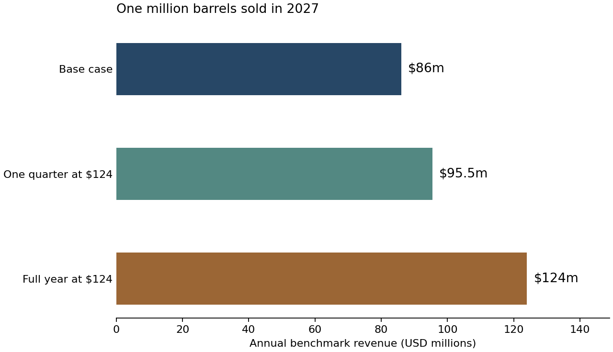

The assumption behind $86
I would start my 2027 model at $86 a barrel and date the assumption November 10, when the EIA published its outlook. October’s $124 belongs in the historical column. By November 18, the spot price had already fallen more than $30 below that October average. A monthly average can be accurate and still be a poor starting point for the next twelve months.
What interests me about $86 is the reasoning behind it. The EIA described falling inventories in October. Its outlook assumes more Middle Eastern supply reaches the market and global inventories rebuild during 2027. The question I would write beside my price input is when that rebuilding begins.
What one expensive quarter does to sales
Suppose a producer sells 250,000 barrels each quarter. For this first pass I assume every barrel earns Brent, sales volumes stay flat and the producer has no hedges. At $86 throughout the year, gross oil sales would be $86 million. Keeping October’s $124 for all four quarters would put sales at $124 million.
I would also test a shorter period of tight supply. Suppose Brent averages $124 in the first quarter, then $86 in each of the next three. In Excel I would put the four quarterly prices above the four sales volumes and calculate annual revenue with SUMPRODUCT. The result is $95.5 million. I can check the $9.5 million increase by hand: 250,000 barrels multiplied by the $38 price difference.
I chose those two prices to make the timing effect visible. The quarterly path is my illustration. A one-quarter delay in inventory growth has no fixed dollar effect on Brent, and the EIA’s $86 annual forecast allows for prices to vary within the year.
From Brent to the price Equinor receives
When the next outlook arrives, I would keep the November version and compare the inventory assumptions quarter by quarter before changing my base case. Tracking those revisions would help me explain whether my revenue estimate moved because of a new supply assumption, a new price observation or a change in sales volumes.
There is still a gap between this exercise and a company model. A producer sells particular grades in particular markets, sometimes under contracts with different pricing dates. For the next piece I want to take one quarter of Equinor’s reported liquids sales, check exactly how it defines its realized price, and compare that figure with Brent over the same period. How much of the difference can I explain from the filing?
Sources
- November 2026 Short-Term Energy Outlook — U.S. Energy Information Administration · Published 2026-11-10; accessed 2026-11-21
- Oil flows through Middle East chokepoints increased in the third quarter — U.S. Energy Information Administration · Published 2026-11-19; accessed 2026-11-21